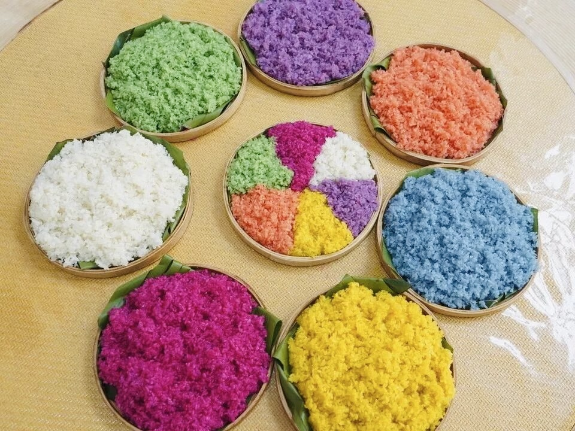
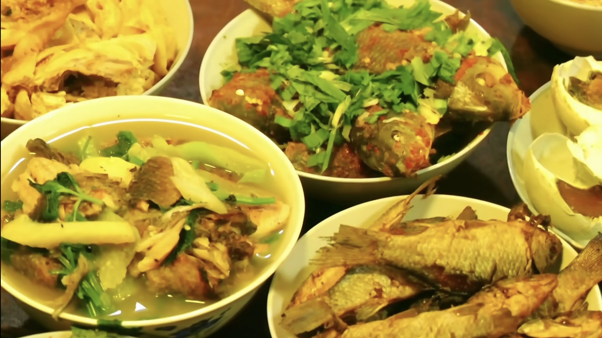
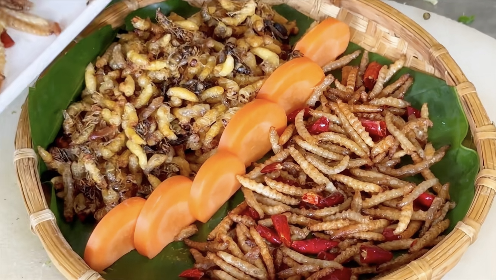
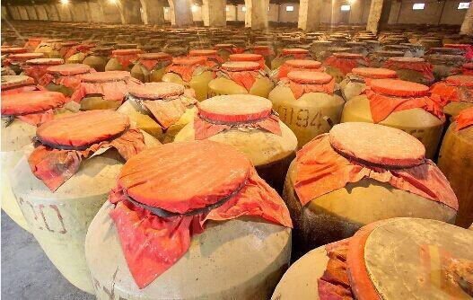
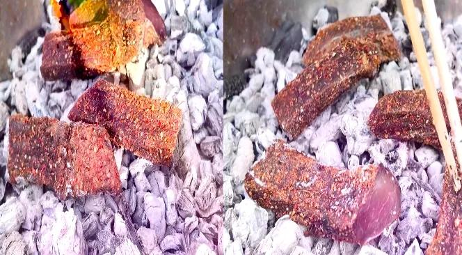
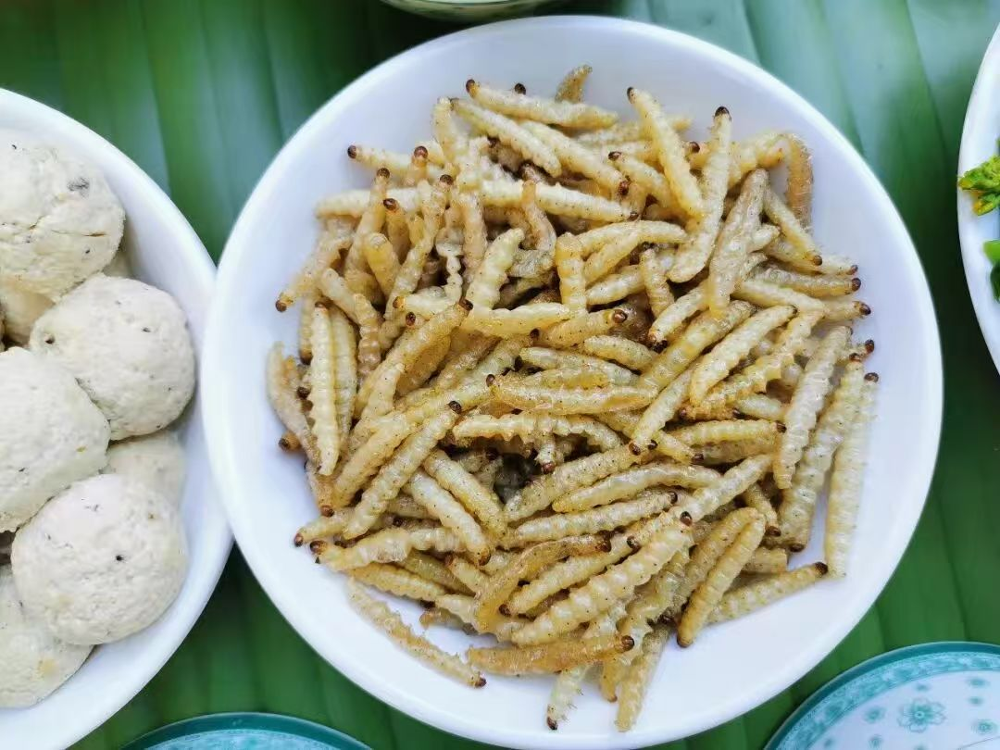
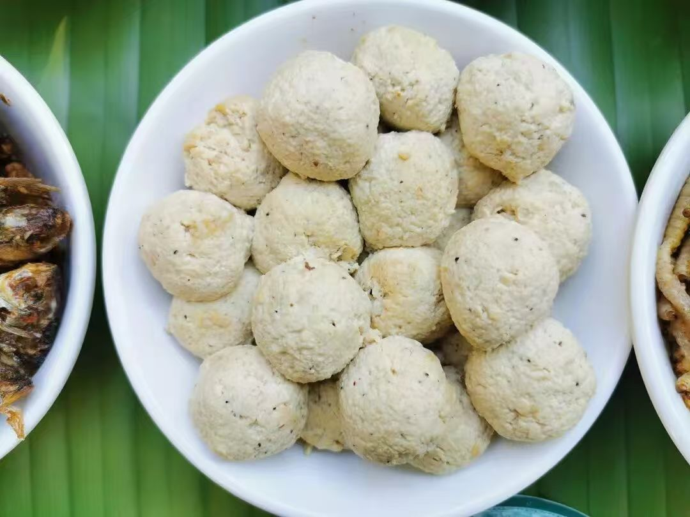
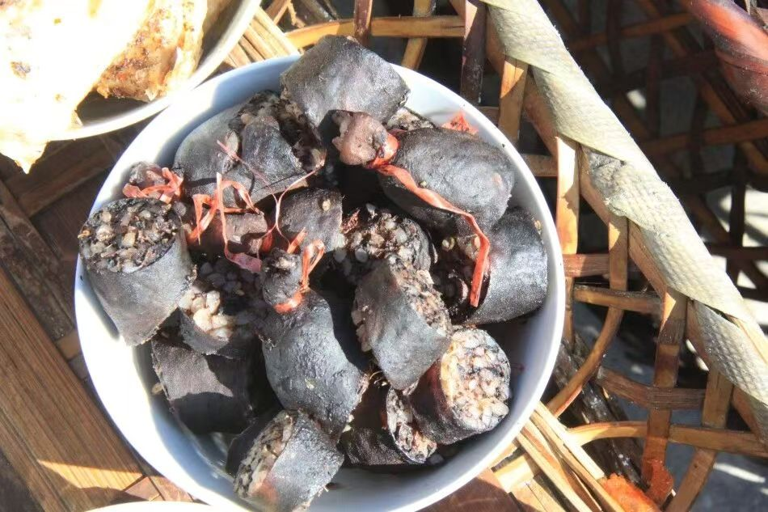

春 · 秋
七彩糯米饭
【劳作：插秧 / 收割】 红、紫、黄、白、黑五色交织，源自植物染料。是长街宴上最耀眼的视觉中心，象征着五谷丰登。
夏 · 秋
梯田鱼
【劳作：稻田养鱼】 利用梯田生态系统，稻鱼共生。肉质鲜美，汤汁浓郁，体现了“一水两用”的生态智慧。
全 年
蘸水鸡
【劳作：山林放养】 散养土鸡，肉质紧实。配以秘制蘸料，鲜香麻辣，是长街宴上不可或缺的开胃大菜。
春 · 秋
油炸蜂蛹
【劳作：山林管护】 高蛋白的森林馈赠。金黄酥脆，香气扑鼻，展现了哈尼人对山林资源的极致利用。
春 · 秋
焖锅酒
【劳作：谷物种植+酿酒】 红米酿造，醇厚甘甜。不仅是饮品，更是哈尼族节庆祭祀中沟通天地的神圣媒介。
全 年
牛干巴
【劳作：畜牧养殖+加工】 黄牛肉腌制风干，咸香有嚼劲。切片煎炒，油而不腻，是哈尼族待客的上等佳肴。
秋 季
油炸竹虫
【劳作：竹林管护】 竹虫富含蛋白质，口感酥脆。这是哈尼族“靠山吃山”的极致体现，勇敢者的美味。
春 · 秋
哈尼豆豉
【劳作：大豆种植+发酵】 大豆发酵的结晶，独特的豉香是哈尼古菜的“灵魂”，提味增鲜，回味无穷。
秋 · 冬
凉拌魔芋
【劳作：作物种植+加工】 魔芋种植收获后制成粉，口感爽滑Q弹，凉拌食用，是解腻开胃的佳品。
夏 · 秋
芭蕉宴
【劳作：果树管护+采摘】 芭蕉树的全身都是宝。从果实到花蕊，再到宽大的叶片（用作天然餐具），充满了热带雨林的风情。
全 年
豆腐圆子
【劳作：大豆种植+发酵】 大豆磨浆点卤，手工捏制成型。外皮微焦，内里嫩滑，清淡中透着豆香，老少皆宜。
秋 · 冬